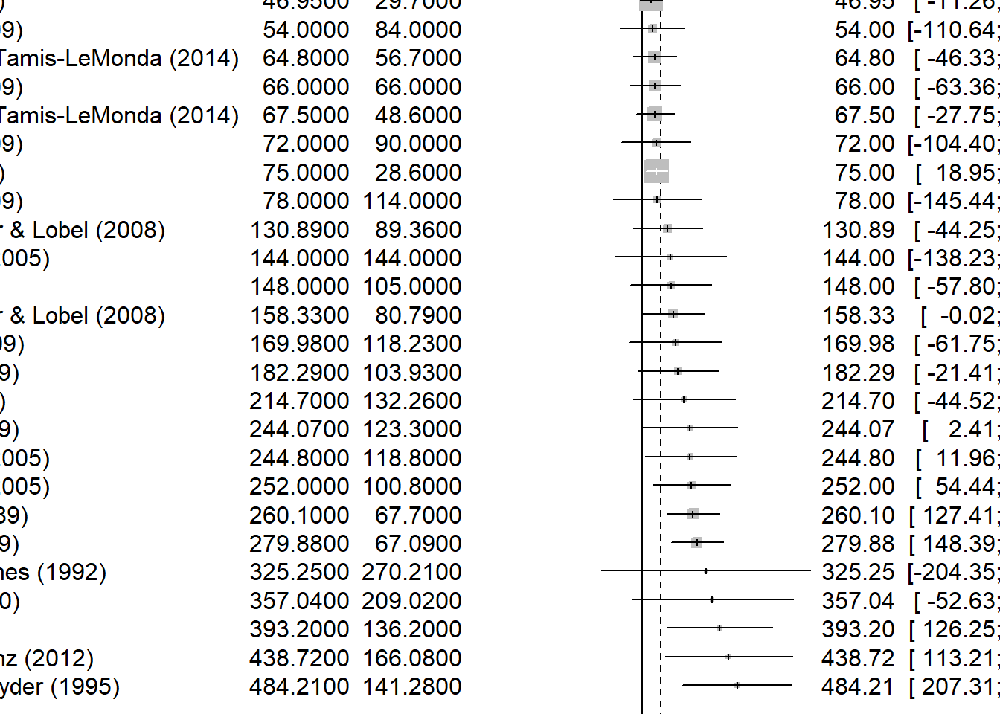
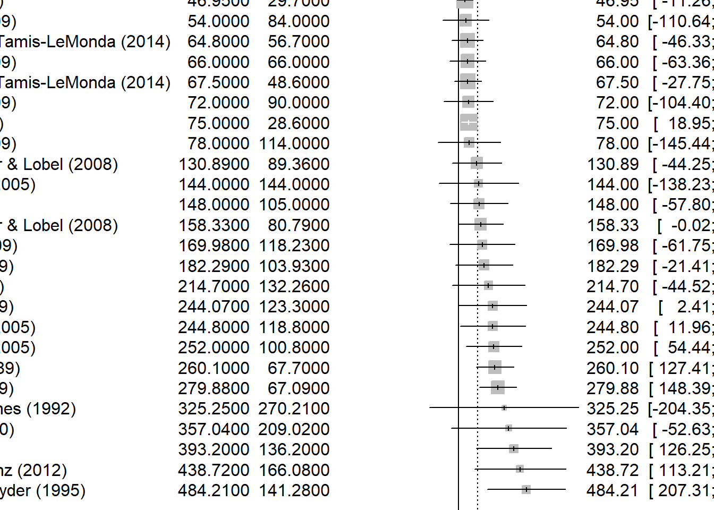

```{r}
library(readxl)
data <- read_excel("data/metaanalysis_data.xlsx")
View(data)
```Upload Dataset
Review Dataset
```{r}
data[1:5,]
```# A tibble: 5 × 28
Study `Female authors` `Male authors` `Age (months)` N_boys N_girls
<chr> <dbl> <dbl> <dbl> <dbl> <dbl>
1 Alexander & Sae… 2 0 19.5 47 47
2 Arthur (2014) 1 0 19 22 18
3 Berenbaum & Hin… 2 0 65.8 18 18
4 Berenbaum & Sny… 2 0 93.1 19 19
5 Doering et al (… 1 3 87 15 15
# ℹ 22 more variables: Mean_boys_play_male <dbl>, SD_boys_play_male <dbl>,
# Mean_girls_play_male <dbl>, SD_girls_play_male <dbl>,
# Mean_boys_play_female <dbl>, SD_boys_play_female <dbl>,
# Mean_girls_play_female <dbl>, SD_girls_play_female <dbl>,
# `Neutral toys` <dbl>, Year <dbl>, `Parent present` <dbl>, Setting <dbl>,
# Country <dbl>, `Case definition adequate` <chr>,
# `Representativeness of cases` <chr>, `Selection of controls` <chr>, …We can now use meta::metagen function to estimate the overall effect size. Type ?metagen to check the possibilities.
Boys Fixed Effect
```{r}
boys_FE <- meta::metagen(
TE=Mean_boys_play_male,
seTE=SD_boys_play_male,
data=data,
studlab=paste(Study),
comb.fixed = TRUE,
comb.random = FALSE)
boys_FE
```Number of studies combined: k = 27
95%-CI z p-value
Common effect model 96.0551 [71.9496; 120.1605] 7.81 < 0.0001
Quantifying heterogeneity:
tau^2 = 5063.4218 [836.1518; 17480.4313]; tau = 71.1577 [28.9163; 132.2136]
I^2 = 48.7% [19.8%; 67.2%]; H = 1.40 [1.12; 1.75]
Test of heterogeneity:
Q d.f. p-value
50.67 26 0.0026
Details on meta-analytical method:
- Inverse variance method
- Restricted maximum-likelihood estimator for tau^2
- Q-Profile method for confidence interval of tau^2 and tauAs p-value < 0.05 it is statistically significant
Meta Boys Mixed Effect
```{r}
meta_boys_mixed <- meta::metacont(
n.e=N_boys,
mean.e=Mean_boys_play_male,
sd.e=SD_boys_play_male,
n.c=N_boys,
mean.c=Mean_boys_play_female,
sd.c=SD_boys_play_female,
data=data,
studlab=paste(Study),
comb.fixed = TRUE,
comb.random = TRUE,
)
meta_boys_mixed
```Number of studies combined: k = 27
Number of observations: o = 1594
MD 95%-CI z p-value
Common effect model 53.4740 [47.8283; 59.1197] 18.56 < 0.0001
Random effects model 108.8697 [62.0450; 155.6944] 4.56 < 0.0001
Quantifying heterogeneity:
tau^2 = 14594.5851 [8849.8303; 29246.4845]; tau = 120.8081 [94.0735; 171.0160]
I^2 = 95.3% [94.1%; 96.3%]; H = 4.62 [4.12; 5.18]
Test of heterogeneity:
Q d.f. p-value
554.07 26 < 0.0001
Details on meta-analytical method:
- Inverse variance method
- Restricted maximum-likelihood estimator for tau^2
- Q-Profile method for confidence interval of tau^2 and tauBoys Random Effect
```{r}
boys_RE <- meta::metagen(
TE=Mean_boys_play_male,
seTE=SD_boys_play_male,
data=data,
studlab=paste(Study),
comb.fixed = FALSE,
comb.random = TRUE)
boys_RE
```Number of studies combined: k = 27
95%-CI z p-value
Random effects model 138.2605 [95.9332; 180.5879] 6.40 < 0.0001
Quantifying heterogeneity:
tau^2 = 5063.4218 [836.1518; 17480.4313]; tau = 71.1577 [28.9163; 132.2136]
I^2 = 48.7% [19.8%; 67.2%]; H = 1.40 [1.12; 1.75]
Test of heterogeneity:
Q d.f. p-value
50.67 26 0.0026
Details on meta-analytical method:
- Inverse variance method
- Restricted maximum-likelihood estimator for tau^2
- Q-Profile method for confidence interval of tau^2 and tauForest Plots for FE
```{r}
boys_FE %>% forest(sortvar=Mean_boys_play_male)
```
Forest Plots for RE
```{r}
boys_RE %>% forest(sortvar=TE)
```
Finding what explains the results
```{r}
boys_FE %>% metareg(~ `Year` + `Country`)
```Warning: 1 study with NAs omitted from model fitting.
Mixed-Effects Model (k = 26; tau^2 estimator: REML)
tau^2 (estimated amount of residual heterogeneity): 0 (SE = 764.8281)
tau (square root of estimated tau^2 value): 0
I^2 (residual heterogeneity / unaccounted variability): 0.00%
H^2 (unaccounted variability / sampling variability): 1.00
R^2 (amount of heterogeneity accounted for): 100.00%
Test for Residual Heterogeneity:
QE(df = 23) = 15.2666, p-val = 0.8848
Test of Moderators (coefficients 2:3):
QM(df = 2) = 34.5911, p-val < .0001
Model Results:
estimate se zval pval ci.lb ci.ub
intrcpt 22370.9058 4160.5331 5.3769 <.0001 14216.4107 30525.4009 ***
Year -11.0712 2.0781 -5.3275 <.0001 -15.1443 -6.9982 ***
Country -74.5977 237.6318 -0.3139 0.7536 -540.3475 391.1522
---
Signif. codes: 0 '***' 0.001 '**' 0.01 '*' 0.05 '.' 0.1 ' ' 1Year variable has negative impact and statistically significant, but country is not significant.
ASSIGNMENT
- Import the data from the
data\metaanalysis_data.xlsxfile. The data come from the meta-analysis study: Todd et al., 2017 - Sex differences in children’s toy preferences: A systematic review, meta‐regression, and meta‐analysis
The study looks at various studies of children choosing what kind of toys they play with (stereotypically ‘boy-toys’ or stereotypically ‘girl-toys’). Mean times (in seconds) of playing are recorded, along with sample sizes and standard errors (for boys playing with each kind of toys and for girls playing with each kind of toys).
There’s also information about the studies (e.g. year) and a bit about quality.
Here’s authors’ descriptions to the data:
Neutral toys (1 = neutral toys included; 2 = neutral toys not included); Parent present (1 = absent; 2 = minimal interaction; 3 = moderate or full interaction); Setting = location of study (1 = home; 2 = laboratory; 3 = nursery); Country = gender inequality index, a measure of how gender egalitarian the country was at the time the study took place.
Note. Quality is assessed using Newcastle–Ottawa Quality Assessment Scale criteria adapted for this study. A star indicates that the study fulfilled this criterion; an X indicates that the study did not fulfil this criterion. Case definition adequate: clear justification for the gendered nature of a toy, for example, based on research. Representativeness of cases: recruitment of consecutive participants. Selection of controls: whether boys and girls were comparable in terms of social background. Parental opinion: whether parents’ views on gender were measured. Comparability of both groups: the toys were comparable (in size, shape, etc.) and if the boys and girls were comparable in age. Ascertainment of behaviour: Play behaviour was clearly defined. Same ascertainment method for both groups: The measurement of the outcome (time spent playing with toy) was clearly defined. Nonresponse rate: whether either nonuptake or dropout rates reported.
- Experiment using what you’ve learned:
- combine the effects
- create a funnel plot (what do you see?)
- check if methods / quality affect the results
- does author gender affect it?